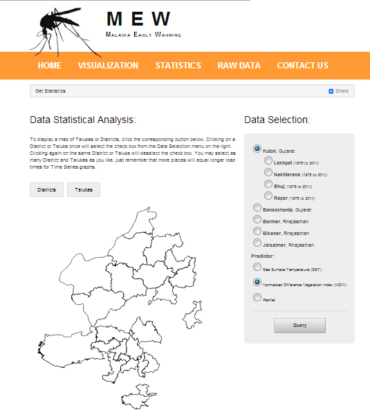
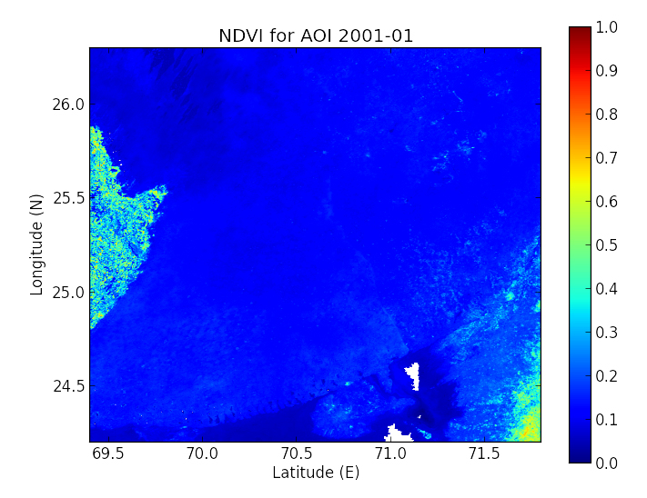
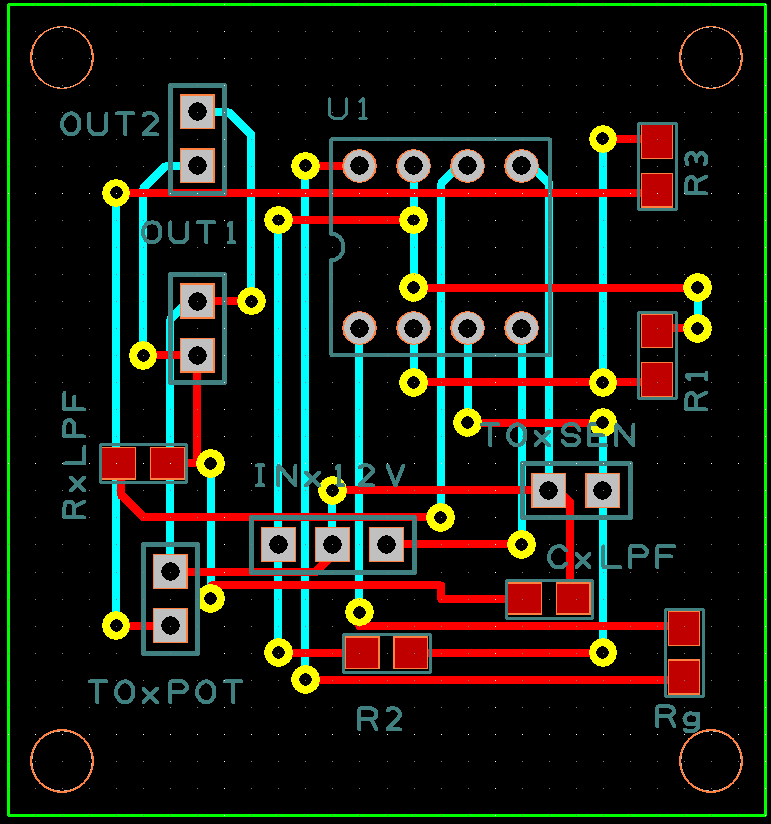
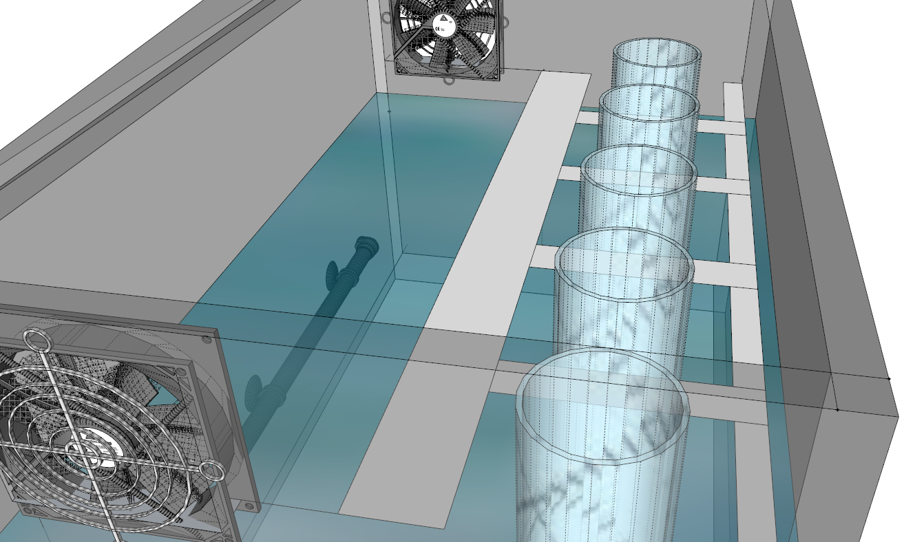

About
Hi, I'm Steve, and I am a software developer. Let me help with your next software project!
I design, build, and test software.
Want to talk? Shoot me an email at Hi@SteveGago.com
Hi, I'm Steve, and I am a software developer. Let me help with your next software project!
I design, build, and test software.
Want to talk? Shoot me an email at Hi@SteveGago.com
At my current gig, I am a software and networking instructor at Chippewa Valley Technical College (CVTC) and loving it. I have taught
I am a proud graduate of Marquette University where I obtained a Bachelors of Science in Electrical and Electronic Engineering and a minor in Mathematics.
I've touched basically everything on computers including
Unfortunately, a lot of software and hardware engineering I've done is proprietary and/or under non-disclosure agreements. That means the code isn't mine, and I don't get to share :'( However, the following projects...
NSerialProtocol
Serial Port Comms For .NET
Under Construction
NSerialProtocol aims to simplify the use of the serial port communications for all .NET languages. It includes easy-to-use serial packet declaration, asynchrounous packet transmission, forward-error correction (FEC), byte stuffing, and clears the fAbortOnError flag.
Visit Repo OnSlfy
The Self-Typing Code On This Website
Under Construction
Slfy is a JavaScript and jQuery library that gives the illusion of self-typing, self-executing code. In reality, Slfy inserts each character individually, removes the characters it just inserted, then inserts the actual code. Slfy can type HTML, CSS or JavaScript.
Visit Repo OnMalaria Early Warning (MEW)
Predicting the Spatial and Temporal Spread of Malaria
Malaria Early Warning (MEW) was a gift to the Indian government to predict the spread of the Malaria virus in the north-western parts of India using rainfall via weather stations, vegetation via satellite, and other data. The website was created using Python, web2py, the R Statistical Language, and a host of other mathematical tools.
Image Processing
Vegetation Index from Satelite Data for MEW
For the MEW project, we used satelite data taken from the NOAA Climate Data Record to generate images of vegetation. Each pixel in the above image represents the amount of green light per square mile of land within the state of Gujarat, India. The above image shows a desert.
Circuit Board
For Gait-Event Detection
The above circuit board was designed to help monitor important events in the walk-cycle (gait) for research and the rehibilitation of stroke patients.
Water bath
For Heat-Activated Kinase in Fruit Flys
We created a custom water bath to rapidly heat fruit-fly eggs to 100° C and back to room temperature for genetics research. I engineered the electronics, user controls, and the PID temperature-control loop.
Summary
Technical Skills
Advanced or proficient knowledge with
Work Experience
Terumo Cardiovascular Group
Software Engineer May 2014 - July 2016
Pharo LLC
Co-owner, Co-founder, Software Engineer January 2012 - April 2014